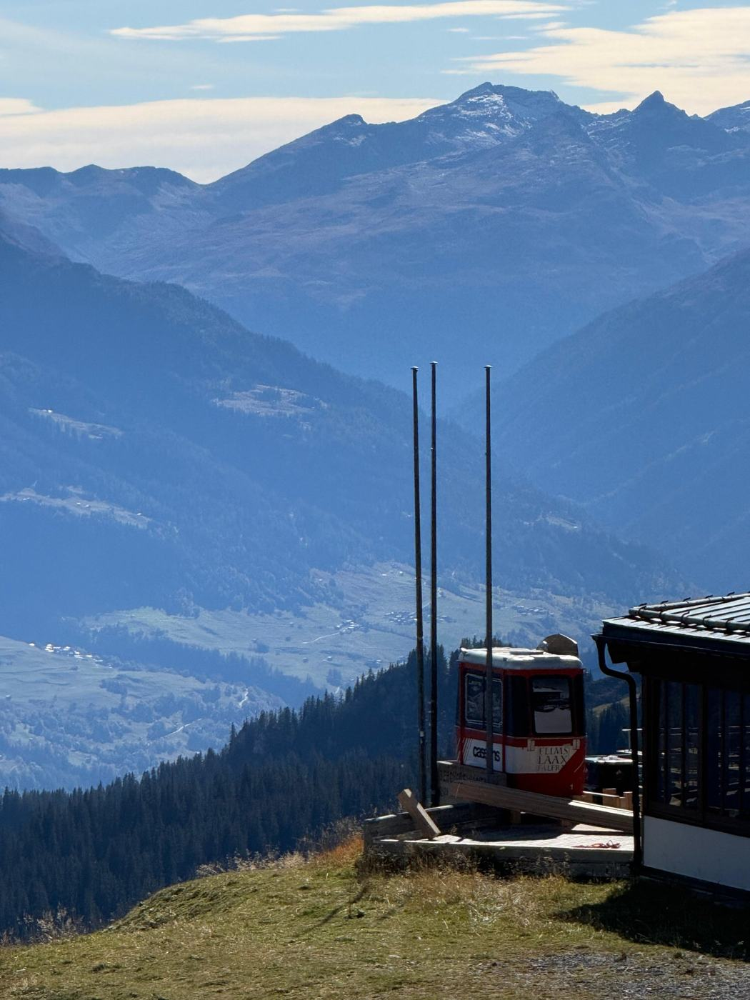
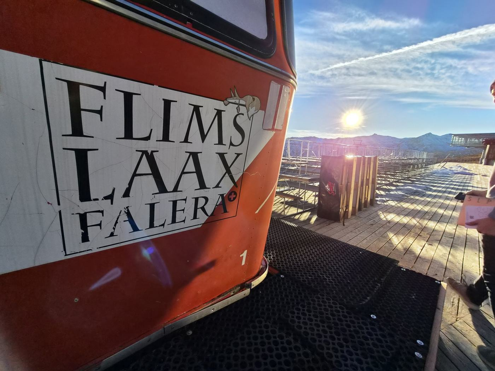

Die Gondel
Die alte Cassons-Gondel bekommt 70 Jahre nach ihrer ersten Fahrt ein zweites Leben: Wir bauen sie zu einem kleinen Stand für Crêpes und heisse Schokolade um, mitten am Berg.
Seventy years after its first ride, the old Cassons gondola gets a second life as a small stand for crêpes and hot chocolate, right on the mountain.


Wo
- Ort
- Berghaus Nagens, Laax (Flims Laax)
- Eröffnung
- Dezember 2026, genaues Datum folgt
Kontakt
Fragen, Ideen oder Anfragen? Schreib uns: